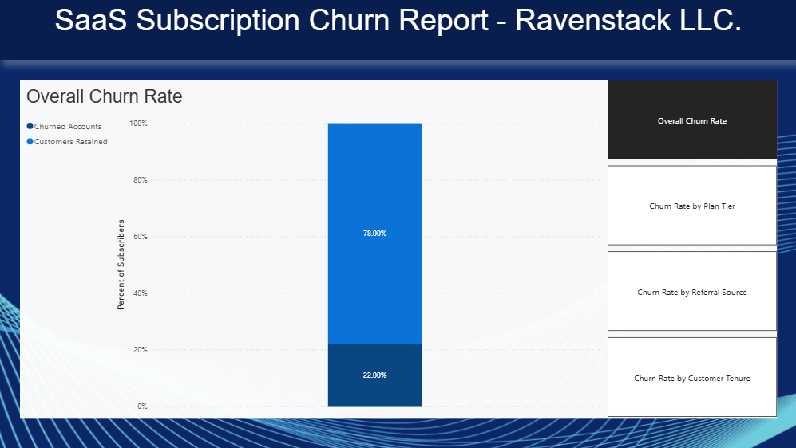
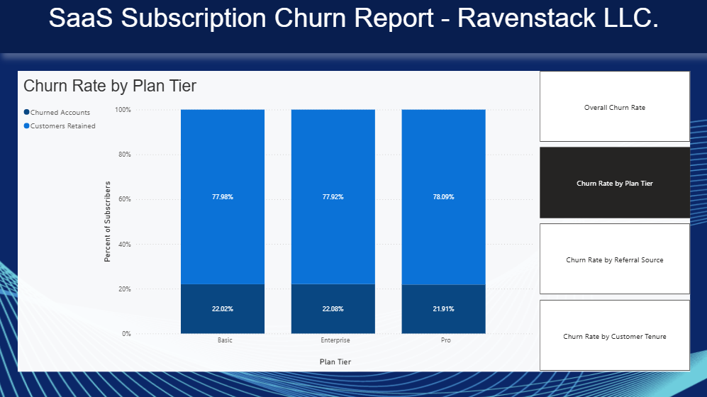
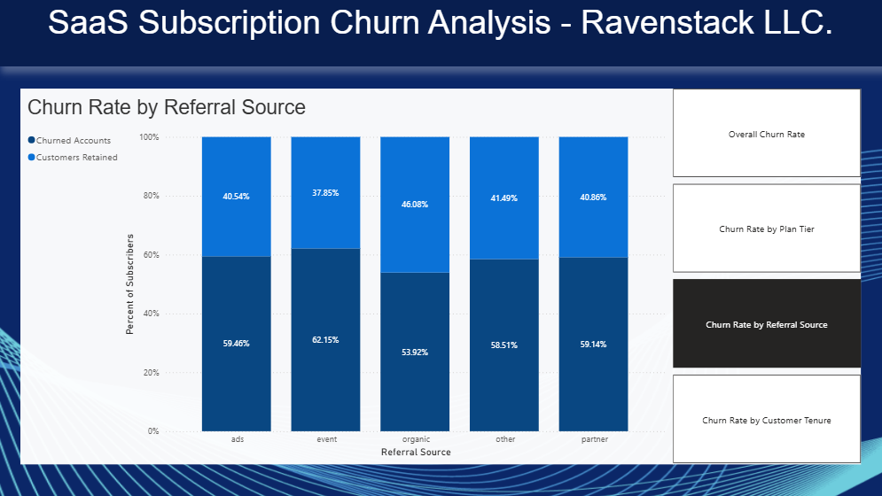
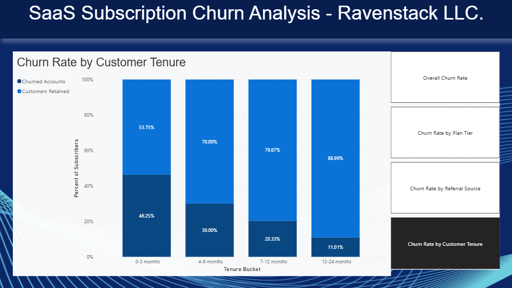

Immunization Information System Data Quality Audit
I built a simple analytics pipeline in SQL and a Power BI dashboard to answer one simple question: why are customers leaving Ravenstack? The project utilizes simulated public data from kaggle here, a few SQL views and queries, and a simple Power BI report.
Churn is the most direct limiter of SaaS growth, it is valuable to understand the patterns and drivers of customer attrition. Having accurate metrics of about who churns and when — by plan, referral source, tenure or usage — helps teams identify the most effective interventions.
The analysis uses five CSV files that model typical SaaS telemetry and support data: accounts, churn events, feature usage, subscriptions, and support tickets. I load them into a small database (I used a database named churndb), create views to standardize time windows and cohorts, then build the KPIs used by the Power BI visualizations.




Full code, analysis, and documentation available on GitHub here.
Immunization Information System Data Quality Audit

Risk-Adjusted Portfolio Optimization and Stability Analysis

Cardiovascular Risk Profiles Among Female Patients